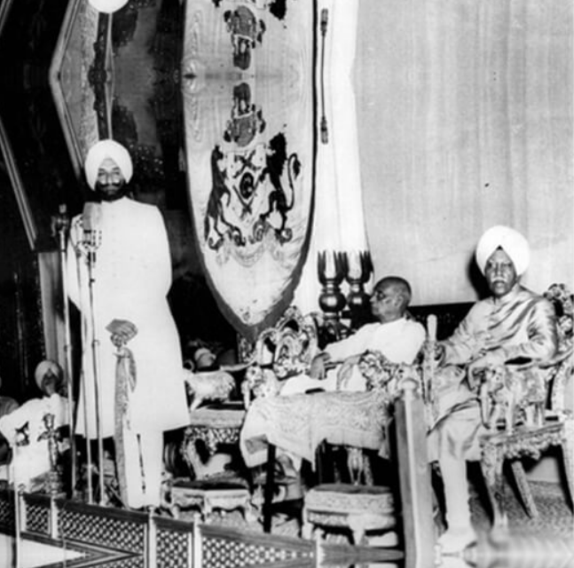

EARLY LIFE OF
SARDAR VALLABHBHAI PATEL
Birth: October 31, 1875
Birth place: Nadiad town, Gujarat
Early life and school education: Karamsad, Petlad and Nadiad.
Parents: Father Jhaverbhai, a farmer, and mother Laad Bai, a simple homemaker
Wife: Jhaverba, who passed away at a very early age in 1909
Children: Daughter Maniben (Born in 1903); Son Dahyabhai (Born in 1905)
Death: December 15, 1950, at Birla House Mumbai
Introduction
SARDAR VALLABHBHAI PATEL

Vallabhbhai Patel (October 31, 1875 – December 15, 1950), the icon of India’s solidarity and integrity and the champion of peasant’s movement in British India, was a political and social leader of India who played a major role in the country’s struggle for Independence and subsequently guided its integration into a united, Independent nation. He is known as the ‘Iron Man of India’. After the great victory of Bardoli peasants’ movement, people named him ‘Sardar’. Vallabhbhai Patel already had a successful practice as a lawyer when he was first inspired by the work and philosophy of Mahatma Gandhi. Vallabhbhai Patel subsequently organised the peasants of Kheda, Borsad, and Bardoli in Gujarat in a non-violent Civil Disobedience Movement against oppressive policies imposed by the British Raj. In this role, he became the most influential leader in Gujarat under guidance of Mahatma Gandhi. He rose to the leadership of the Indian National Congress in 1931 at the Karachi Congress Session and was at the forefront of all political events from 1931 onwards, at national level. He was a key figure in organising the party for elections in 1934 and 1937 and promoting the Quit India Movement of 1942, which resulted into arrest of almost all the leaders of freedom struggle.
As the first Home Minister and Deputy Prime Minister of India, Sardar Patel organised relief for refugees in Punjab and Delhi as well as led efforts to restore peace across the nation. Sardar Patel took charge of the task to forge a united India from the 562 semi-autonomous princely states and British-era colonial provinces. Using frank diplomacy backed with the option (and the use) of military action, Sardar Patel’s leadership enabled the accession of almost every princely state. Hailed as the Iron Man of India, he is also remembered as the ‘Patron Saint’ of India’s civil servants for establishing modern all-India services. Sardar Patel was also one of the earliest proponents of property rights and free enterprise in India. His contribution as the Chairman of the Constitutional Committee on Fundamental Rights, Minorities’ rights, Provincial Constitutions, and Demarcation of Borders of Scheduled Areas are the pillars of the Indian Constitution.
JOURNEY
LIFE OF SARDAR PATEL



MAJOR FACTS
IT'S A REAL FACTS OF SARDAR PATEL
- He led farmers in various successful Satyagrahas in Kheda 1918, Borsad 1924 and Bardoli 1928.
- Elected as Ahmedabad’s Municipality President in 1924 and worked till April 1928.
- Elected President of the Indian National Congress in 1931 in Karachi Session.
- Independent India’s first Deputy Prime Minister, Home Minister and Information and Broadcasting Minister.
- The Architect of United India post-Independence.
- Held the charge of Prime Minister of India four times on different occasions till 1950.
- Charted the Indian Constitution by drafting provisions for important subjects as a Chairman.
- Posthumously, conferred with Bharat Ratna in 1991.